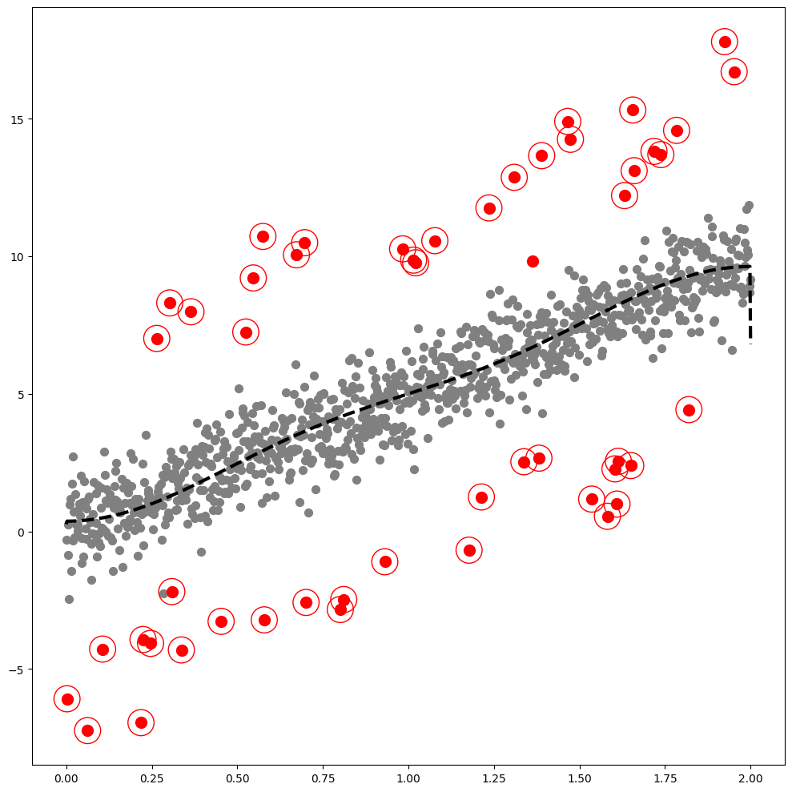

import tqdm
import numpy as np
import pandas as pd
import matplotlib.pyplot as plt
import plotly.express as px
import warnings
warnings.simplefilter("ignore", np.ComplexWarning)
from haversine import haversine
from IPython.display import HTMLImport
from matplotlib import cm
from pygsp import graphs, filters, plotting, utils
import plotly.graph_objects as go
import rpy2
import rpy2.robjects as ro
from rpy2.robjects.vectors import FloatVector
from rpy2.robjects.packages import importrimport warnings
warnings.filterwarnings("ignore")Linear
np.random.seed(6)
n = 1000
eta_sparsity = 0.05
epsilon = np.around(np.random.normal(size=n),15)
signal = np.random.choice(np.concatenate((np.random.uniform(-7, -5, round(n*eta_sparsity/2)).round(15), np.random.uniform(5, 7, round(n*eta_sparsity/2)).round(15), np.repeat(0, n - round(n*eta_sparsity)))), n)
eta = signal + epsilon
outlier_true_linear= signal.copy()
outlier_true_linear = list(map(lambda x: 1 if x!=0 else 0,outlier_true_linear))
x_1 = np.linspace(0,2,n)
y1_1 = 5 * x_1
y_1 = y1_1 + eta # eta = signal + epsilon
_df=pd.DataFrame({'x':x_1, 'y':y_1})
w=np.zeros((n,n))
for i in range(n):
for j in range(n):
if i==j :
w[i,j] = 0
elif np.abs(i-j) <= 1 :
w[i,j] = 1
index_of_trueoutlier_bool = signal!=0class Linear:
def __init__(self,df):
self.df = df
self.y = df.y.to_numpy()
self.x = df.x.to_numpy()
self.n = len(self.y)
self.W = w
def _eigen(self):
d= self.W.sum(axis=1)
D= np.diag(d)
self.L = np.diag(1/np.sqrt(d)) @ (D-self.W) @ np.diag(1/np.sqrt(d))
self.lamb, self.Psi = np.linalg.eigh(self.L)
self.Lamb = np.diag(self.lamb)
def fit(self,sd=20): # fit with ebayesthresh
self._eigen()
self.ybar = self.Psi.T @ self.y # fbar := graph fourier transform of f
self.power = self.ybar**2
ebayesthresh = importr('EbayesThresh').ebayesthresh
self.power_threshed=np.array(ebayesthresh(FloatVector(self.power),sd=sd))
self.ybar_threshed = np.where(self.power_threshed>0,self.ybar,0)
self.yhat = self.Psi@self.ybar_threshed
self.df = self.df.assign(yHat = self.yhat)
self.df = self.df.assign(Residual = self.df.y- self.df.yHat)
def fig(self,ymin=-5,ymax=20,cuts=0,cutf=1495):
outlier_GODE_linear_old = (self.df['Residual']**2).tolist()
sorted_data = sorted(outlier_GODE_linear_old,reverse=True)
index = int(len(sorted_data) * eta_sparsity)
five_percent = sorted_data[index]
outlier_GODE_linear = list(map(lambda x: 1 if x > five_percent else 0,outlier_GODE_linear_old))
outlier_GODE_linear_index = [i for i, value in enumerate(outlier_GODE_linear_old) if value > five_percent]
fig,ax = plt.subplots(figsize=(10,10))
ax.scatter(self.x,self.y,color='gray',s=50)
# ax.scatter(self.x[index_of_trueoutlier_bool],self.y[index_of_trueoutlier_bool],color='red',s=50)
ax.scatter(self.x[index_of_trueoutlier_bool],self.y[index_of_trueoutlier_bool],color='red',s=100)
ax.plot(self.x[cuts:cutf],self.yhat[cuts:cutf], '--k',lw=3)
ax.scatter(self.df.x[outlier_GODE_linear_index],self.df.y[outlier_GODE_linear_index],color='red',s=550,facecolors='none', edgecolors='r')
fig.tight_layout()
# fig.savefig('fig1_231103.eps',format='eps')
# fig.savefig('linear_240623.pdf',format='pdf')_Linear = Linear(_df)
_Linear.fit(sd=20)_Linear.fig()
Orbit
n = 1000
eta_sparsity = 0.05
random_seed=77np.random.seed(777)
epsilon = np.around(np.random.normal(size=n),15)
signal = np.random.choice(np.concatenate((np.random.uniform(-4, -1, round(n * eta_sparsity / 2)).round(15), np.random.uniform(1, 4, round(n * eta_sparsity / 2)).round(15), np.repeat(0, n - round(n * eta_sparsity)))), n)
eta = signal + epsilon
pi=np.pi
ang=np.linspace(-pi,pi-2*pi/n,n)
r=5+np.cos(np.linspace(0,12*pi,n))
vx=r*np.cos(ang)
vy=r*np.sin(ang)
f1=10*np.sin(np.linspace(0,6*pi,n))
f = f1 + eta
_df = pd.DataFrame({'x' : vx, 'y' : vy, 'f' : f,'f1':f1})
outlier_true_orbit = signal.copy()
outlier_true_orbit = list(map(lambda x: 1 if x!=0 else 0,outlier_true_orbit))
index_of_trueoutlier_bool = signal!=0import seaborn as snsheat msp 그려도 되는지?
kappa,
research 필요.
하이퍼파라메터 찾는 방법 공부
tex 파일 수정
class Orbit:
def __init__(self,df):
self.df = df
self.f = df.f.to_numpy()
self.f1 = df.f1.to_numpy()
self.x = df.x.to_numpy()
self.y = df.y.to_numpy()
self.n = len(self.f)
self.theta= None
def get_distance(self):
self.D = np.zeros([self.n,self.n])
locations = np.stack([self.x, self.y],axis=1)
for i in tqdm.tqdm(range(self.n)):
for j in range(i,self.n):
self.D[i,j]=np.linalg.norm(locations[i]-locations[j])
self.D = self.D + self.D.T
def get_weightmatrix(self,theta=1,beta=0.5,kappa=4000):
self.theta = theta
dist = np.where(self.D < kappa,self.D,0)
self.W = np.exp(-(dist/self.theta)**2)
def _eigen(self):
d= self.W.sum(axis=1)
D= np.diag(d)
self.L = np.diag(1/np.sqrt(d)) @ (D-self.W) @ np.diag(1/np.sqrt(d))
self.lamb, self.Psi = np.linalg.eigh(self.L)
self.Lamb = np.diag(self.lamb)
def fit(self,sd=5): # fit with ebayesthresh
self._eigen()
self.fbar = self.Psi.T @ self.f # fbar := graph fourier transform of f
self.power = self.fbar**2
ebayesthresh = importr('EbayesThresh').ebayesthresh
self.power_threshed=np.array(ebayesthresh(FloatVector(self.fbar**2),sd=sd))
self.fbar_threshed = np.where(self.power_threshed>0,self.fbar,0)
self.fhat = self.Psi@self.fbar_threshed
self.df = self.df.assign(fHat = self.fhat)
self.df = self.df.assign(Residual = self.df.f- self.df.fHat)
def fig(self):
outlier_GODE_one_old = (_Orbit.df['Residual']**2).tolist()
sorted_data = sorted(outlier_GODE_one_old,reverse=True)
index = int(len(sorted_data) * 0.05)
five_percent = sorted_data[index]
outlier_GODE_one = list(map(lambda x: 1 if x > five_percent else 0,outlier_GODE_one_old))
outlier_GODE_one_index = [i for i, value in enumerate(outlier_GODE_one_old) if value > five_percent]
# fig, (ax1,ax2,ax3) = plt.subplots(1,3,figsize=(30,15),subplot_kw={"projection":"3d"})
# ax1.grid(False)
# ax1.scatter3D(self.x[~index_of_trueoutlier_bool],self.y[~index_of_trueoutlier_bool],self.f[~index_of_trueoutlier_bool],zdir='z',color='gray',alpha=0.99,zorder=1)
# ax1.scatter3D(self.x[index_of_trueoutlier_bool],self.y[index_of_trueoutlier_bool],self.f[index_of_trueoutlier_bool],zdir='z',s=75,color='red',alpha=0.99,zorder=2)
# ax1.scatter3D(self.x[outlier_GODE_one_index],self.y[outlier_GODE_one_index],self.f[outlier_GODE_one_index],edgecolors='red',zdir='z',s=300,facecolors='none',alpha=0.99,zorder=3)
# ax1.plot3D(self.x,self.y,self.f1,'--k',lw=3,zorder=10)
# ax1.xaxis.pane.fill = False
# ax1.yaxis.pane.fill = False
# ax1.zaxis.pane.fill = False
# ax1.view_init(elev=30., azim=60)
# ax2.grid(False)
# ax2.scatter3D(self.x[~index_of_trueoutlier_bool],self.y[~index_of_trueoutlier_bool],self.f[~index_of_trueoutlier_bool],zdir='z',color='gray',alpha=0.99,zorder=1)
# ax2.scatter3D(self.x[index_of_trueoutlier_bool],self.y[index_of_trueoutlier_bool],self.f[index_of_trueoutlier_bool],zdir='z',s=75,color='red',alpha=0.99,zorder=2)
# ax2.scatter3D(self.x[outlier_GODE_one_index],self.y[outlier_GODE_one_index],self.f[outlier_GODE_one_index],edgecolors='red',zdir='z',s=300,facecolors='none',alpha=0.99,zorder=3)
# ax2.plot3D(self.x,self.y,self.f1,'--k',lw=3,zorder=10)
# ax2.xaxis.pane.fill = False
# ax2.yaxis.pane.fill = False
# ax2.zaxis.pane.fill = False
# ax2.view_init(elev=30., azim=40)
# ax3.grid(False)
# ax3.scatter3D(self.x[~index_of_trueoutlier_bool],self.y[~index_of_trueoutlier_bool],self.f[~index_of_trueoutlier_bool],zdir='z',color='gray',alpha=0.99,zorder=1)
# ax3.scatter3D(self.x[index_of_trueoutlier_bool],self.y[index_of_trueoutlier_bool],self.f[index_of_trueoutlier_bool],zdir='z',s=75,color='red',alpha=0.99,zorder=2)
# ax3.scatter3D(self.x[outlier_GODE_one_index],self.y[outlier_GODE_one_index],self.f[outlier_GODE_one_index],edgecolors='red',zdir='z',s=300,facecolors='none',alpha=0.99,zorder=3)
# ax3.plot3D(self.x,self.y,self.f1,'--k',lw=3,zorder=10)
# ax3.xaxis.pane.fill = False
# ax3.yaxis.pane.fill = False
# ax3.zaxis.pane.fill = False
# ax3.view_init(elev=30., azim=10)
# fig.savefig('fig2_231129.eps',format='eps')
# fig.savefig('orbit_231129_3.pdf',format='pdf')# _Orbit = Orbit(_df)# _Orbit.get_distance()# _Orbit.get_weightmatrix(theta=(_Orbit.D[_Orbit.D>0].mean()),kappa=2500)
# _Orbit.fit(sd=15)# %%capture --no-display
# _Orbit.fig()_Orbit = Orbit(_df)
_Orbit.get_distance()
_Orbit.get_weightmatrix(theta=(_Orbit.D[_Orbit.D>0].mean()),kappa=10)
_Orbit.fit(sd=15)
outlier_GODE_orbit_old = (_Orbit.df['Residual']**2).tolist()
sorted_data = sorted(outlier_GODE_orbit_old,reverse=True)
index = int(len(sorted_data) * eta_sparsity)
five_percent = sorted_data[index]
outlier_GODE_orbit = list(map(lambda x: 1 if x > five_percent else 0,outlier_GODE_orbit_old))
fpr, tpr, thresh = roc_curve(outlier_true_orbit, outlier_GODE_orbit)
AUC = auc(fpr, tpr)
AUC100%|██████████| 1000/1000 [00:01<00:00, 733.87it/s]0.7956072018712848kappa_values = list(range(10, 110, 10))
n_values = list(range(1000, 11000, 1000))
eta_sparsity_list = list([0.01,0.05,0.1,0.2])
random_seed=77
tab_orbit = pd.DataFrame(columns=["Accuracy","Precision","Recall","F1","AUC","N","Contamination"])for n in n_values:
for eta_sparsity in eta_sparsity_list:
for kappa in kappa_values:
np.random.seed(777)
epsilon = np.around(np.random.normal(size=n),15)
signal = np.random.choice(np.concatenate((np.random.uniform(-4, -1, round(n * eta_sparsity / 2)).round(15), np.random.uniform(1, 4, round(n * eta_sparsity / 2)).round(15), np.repeat(0, n - round(n * eta_sparsity)))), n)
eta = signal + epsilon
pi=np.pi
ang=np.linspace(-pi,pi-2*pi/n,n)
r=5+np.cos(np.linspace(0,12*pi,n))
vx=r*np.cos(ang)
vy=r*np.sin(ang)
f1=10*np.sin(np.linspace(0,6*pi,n))
f = f1 + eta
_df = pd.DataFrame({'x' : vx, 'y' : vy, 'f' : f,'f1':f1})
outlier_true_orbit = signal.copy()
outlier_true_orbit = list(map(lambda x: 1 if x!=0 else 0,outlier_true_orbit))
index_of_trueoutlier_bool = signal!=0
_Orbit = Orbit(_df)
_Orbit.get_distance()
_Orbit.get_weightmatrix(theta=(_Orbit.D[_Orbit.D>0].mean()),kappa=kappa)
_Orbit.fit(sd=15)
outlier_GODE_orbit_old = (_Orbit.df['Residual']**2).tolist()
sorted_data = sorted(outlier_GODE_orbit_old,reverse=True)
index = int(len(sorted_data) * eta_sparsity)
five_percent = sorted_data[index]
outlier_GODE_orbit = list(map(lambda x: 1 if x > five_percent else 0,outlier_GODE_orbit_old))
fpr, tpr, thresh = roc_curve(outlier_true_orbit, outlier_GODE_orbit)
fold_AUC = auc(fpr, tpr)
tab = pd.concat([tab,
pd.DataFrame({"n":[n],"kappa":[kappa],"eta_sparsity":[eta_sparsity],"AUC":[fold_AUC]})])
100%|██████████| 1000/1000 [00:01<00:00, 711.22it/s]
100%|██████████| 1000/1000 [00:01<00:00, 741.54it/s]
100%|██████████| 1000/1000 [00:01<00:00, 717.34it/s]
100%|██████████| 1000/1000 [00:01<00:00, 730.21it/s]
100%|██████████| 1000/1000 [00:01<00:00, 669.98it/s]
100%|██████████| 1000/1000 [00:01<00:00, 689.79it/s]
100%|██████████| 1000/1000 [00:01<00:00, 736.05it/s]
100%|██████████| 1000/1000 [00:01<00:00, 696.80it/s]
100%|██████████| 1000/1000 [00:01<00:00, 708.58it/s]
100%|██████████| 1000/1000 [00:01<00:00, 704.12it/s]
100%|██████████| 1000/1000 [00:01<00:00, 741.91it/s]
100%|██████████| 1000/1000 [00:01<00:00, 709.28it/s]
100%|██████████| 1000/1000 [00:01<00:00, 712.45it/s]
100%|██████████| 1000/1000 [00:01<00:00, 736.23it/s]
100%|██████████| 1000/1000 [00:01<00:00, 724.72it/s]
100%|██████████| 1000/1000 [00:01<00:00, 744.37it/s]
100%|██████████| 1000/1000 [00:01<00:00, 696.11it/s]
100%|██████████| 1000/1000 [00:01<00:00, 717.42it/s]
100%|██████████| 1000/1000 [00:01<00:00, 701.16it/s]
100%|██████████| 1000/1000 [00:01<00:00, 674.27it/s]
100%|██████████| 1000/1000 [00:01<00:00, 703.70it/s]
100%|██████████| 1000/1000 [00:01<00:00, 727.77it/s]
100%|██████████| 1000/1000 [00:01<00:00, 724.76it/s]
100%|██████████| 1000/1000 [00:01<00:00, 730.76it/s]
100%|██████████| 1000/1000 [00:01<00:00, 744.10it/s]
100%|██████████| 1000/1000 [00:01<00:00, 755.38it/s]
100%|██████████| 1000/1000 [00:01<00:00, 727.95it/s]
100%|██████████| 1000/1000 [00:01<00:00, 749.74it/s]
100%|██████████| 1000/1000 [00:01<00:00, 723.94it/s]
100%|██████████| 1000/1000 [00:01<00:00, 733.47it/s]
100%|██████████| 1000/1000 [00:01<00:00, 748.44it/s]
100%|██████████| 1000/1000 [00:01<00:00, 723.71it/s]
100%|██████████| 1000/1000 [00:01<00:00, 735.98it/s]
100%|██████████| 1000/1000 [00:01<00:00, 735.58it/s]
100%|██████████| 1000/1000 [00:01<00:00, 704.48it/s]
100%|██████████| 1000/1000 [00:01<00:00, 730.25it/s]
100%|██████████| 1000/1000 [00:01<00:00, 679.69it/s]
100%|██████████| 1000/1000 [00:01<00:00, 732.70it/s]
100%|██████████| 1000/1000 [00:01<00:00, 721.96it/s]
100%|██████████| 1000/1000 [00:01<00:00, 733.71it/s]
100%|██████████| 2000/2000 [00:05<00:00, 383.29it/s]
100%|██████████| 2000/2000 [00:05<00:00, 380.91it/s]
100%|██████████| 2000/2000 [00:05<00:00, 379.58it/s]
100%|██████████| 2000/2000 [00:05<00:00, 371.91it/s]
100%|██████████| 2000/2000 [00:05<00:00, 363.73it/s]
100%|██████████| 2000/2000 [00:05<00:00, 358.63it/s]
100%|██████████| 2000/2000 [00:05<00:00, 369.77it/s]
100%|██████████| 2000/2000 [00:05<00:00, 359.44it/s]
100%|██████████| 2000/2000 [00:05<00:00, 374.13it/s]
100%|██████████| 2000/2000 [00:05<00:00, 377.77it/s]
100%|██████████| 2000/2000 [00:05<00:00, 388.97it/s]
100%|██████████| 2000/2000 [00:05<00:00, 378.05it/s]
100%|██████████| 2000/2000 [00:05<00:00, 359.97it/s]
100%|██████████| 2000/2000 [00:05<00:00, 369.55it/s]
100%|██████████| 2000/2000 [00:05<00:00, 368.87it/s]
100%|██████████| 2000/2000 [00:05<00:00, 374.86it/s]
100%|██████████| 2000/2000 [00:05<00:00, 362.51it/s]
100%|██████████| 2000/2000 [00:05<00:00, 382.14it/s]
100%|██████████| 2000/2000 [00:05<00:00, 356.52it/s]
100%|██████████| 2000/2000 [00:05<00:00, 372.06it/s]
100%|██████████| 2000/2000 [00:05<00:00, 361.12it/s]
100%|██████████| 2000/2000 [00:05<00:00, 371.78it/s]
100%|██████████| 2000/2000 [00:05<00:00, 362.81it/s]
100%|██████████| 2000/2000 [00:05<00:00, 365.70it/s]
100%|██████████| 2000/2000 [00:05<00:00, 376.56it/s]
100%|██████████| 2000/2000 [00:05<00:00, 369.52it/s]
100%|██████████| 2000/2000 [00:05<00:00, 368.71it/s]
100%|██████████| 2000/2000 [00:05<00:00, 379.80it/s]
100%|██████████| 2000/2000 [00:05<00:00, 376.90it/s]
100%|██████████| 2000/2000 [00:05<00:00, 373.14it/s]
100%|██████████| 2000/2000 [00:05<00:00, 379.35it/s]
100%|██████████| 2000/2000 [00:05<00:00, 371.39it/s]
100%|██████████| 2000/2000 [00:05<00:00, 379.70it/s]
100%|██████████| 2000/2000 [00:05<00:00, 359.56it/s]
100%|██████████| 2000/2000 [00:05<00:00, 380.25it/s]
100%|██████████| 2000/2000 [00:05<00:00, 374.94it/s]
100%|██████████| 2000/2000 [00:05<00:00, 379.70it/s]
100%|██████████| 2000/2000 [00:05<00:00, 372.75it/s]
100%|██████████| 2000/2000 [00:05<00:00, 382.27it/s]
100%|██████████| 2000/2000 [00:05<00:00, 378.87it/s]
100%|██████████| 3000/3000 [00:11<00:00, 256.66it/s]
100%|██████████| 3000/3000 [00:11<00:00, 251.98it/s]
100%|██████████| 3000/3000 [00:11<00:00, 250.89it/s]
100%|██████████| 3000/3000 [00:11<00:00, 251.75it/s]
100%|██████████| 3000/3000 [00:11<00:00, 254.79it/s]
100%|██████████| 3000/3000 [00:11<00:00, 250.15it/s]
100%|██████████| 3000/3000 [00:12<00:00, 241.78it/s]
100%|██████████| 3000/3000 [00:11<00:00, 253.66it/s]
100%|██████████| 3000/3000 [00:12<00:00, 249.06it/s]
100%|██████████| 3000/3000 [00:11<00:00, 254.82it/s]
100%|██████████| 3000/3000 [00:12<00:00, 247.32it/s]
100%|██████████| 3000/3000 [00:12<00:00, 242.31it/s]
100%|██████████| 3000/3000 [00:11<00:00, 250.97it/s]
100%|██████████| 3000/3000 [00:12<00:00, 246.05it/s]
100%|██████████| 3000/3000 [00:12<00:00, 240.08it/s]
100%|██████████| 3000/3000 [00:12<00:00, 238.73it/s]
100%|██████████| 3000/3000 [00:12<00:00, 237.73it/s]
100%|██████████| 3000/3000 [00:12<00:00, 240.42it/s]
100%|██████████| 3000/3000 [00:12<00:00, 241.17it/s]
100%|██████████| 3000/3000 [00:12<00:00, 249.59it/s]
100%|██████████| 3000/3000 [00:12<00:00, 245.66it/s]
100%|██████████| 3000/3000 [00:11<00:00, 250.66it/s]
100%|██████████| 3000/3000 [00:12<00:00, 249.28it/s]
100%|██████████| 3000/3000 [00:12<00:00, 250.00it/s]
100%|██████████| 3000/3000 [00:11<00:00, 252.44it/s]
100%|██████████| 3000/3000 [00:12<00:00, 246.29it/s]
100%|██████████| 3000/3000 [00:12<00:00, 246.69it/s]
100%|██████████| 3000/3000 [00:12<00:00, 245.13it/s]
100%|██████████| 3000/3000 [00:12<00:00, 247.63it/s]
100%|██████████| 3000/3000 [00:11<00:00, 251.50it/s]
100%|██████████| 3000/3000 [00:11<00:00, 253.88it/s]
100%|██████████| 3000/3000 [00:12<00:00, 249.59it/s]
100%|██████████| 3000/3000 [00:12<00:00, 242.24it/s]
100%|██████████| 3000/3000 [00:12<00:00, 238.58it/s]
100%|██████████| 3000/3000 [00:11<00:00, 253.15it/s]
100%|██████████| 3000/3000 [00:11<00:00, 257.15it/s]
100%|██████████| 3000/3000 [00:11<00:00, 261.29it/s]
100%|██████████| 3000/3000 [00:12<00:00, 249.15it/s]
100%|██████████| 3000/3000 [00:11<00:00, 255.32it/s]
100%|██████████| 3000/3000 [00:11<00:00, 257.85it/s]
100%|██████████| 4000/4000 [00:21<00:00, 189.44it/s]
100%|██████████| 4000/4000 [00:20<00:00, 191.45it/s]
100%|██████████| 4000/4000 [00:21<00:00, 189.59it/s]
100%|██████████| 4000/4000 [00:21<00:00, 184.91it/s]
100%|██████████| 4000/4000 [00:21<00:00, 187.61it/s]
100%|██████████| 4000/4000 [00:21<00:00, 190.34it/s]
100%|██████████| 4000/4000 [00:20<00:00, 195.54it/s]
100%|██████████| 4000/4000 [00:21<00:00, 189.64it/s]
100%|██████████| 4000/4000 [00:20<00:00, 191.19it/s]
100%|██████████| 4000/4000 [00:20<00:00, 190.92it/s]
100%|██████████| 4000/4000 [00:21<00:00, 185.39it/s]
100%|██████████| 4000/4000 [00:21<00:00, 189.95it/s]
100%|██████████| 4000/4000 [00:21<00:00, 190.19it/s]
100%|██████████| 4000/4000 [00:21<00:00, 190.23it/s]
100%|██████████| 4000/4000 [00:20<00:00, 190.80it/s]
100%|██████████| 4000/4000 [00:21<00:00, 188.37it/s]
100%|██████████| 4000/4000 [00:21<00:00, 189.61it/s]
100%|██████████| 4000/4000 [00:20<00:00, 190.58it/s]
100%|██████████| 4000/4000 [00:20<00:00, 194.23it/s]
100%|██████████| 4000/4000 [00:21<00:00, 189.49it/s]
100%|██████████| 4000/4000 [00:21<00:00, 189.47it/s]
100%|██████████| 4000/4000 [00:21<00:00, 190.30it/s]
100%|██████████| 4000/4000 [00:21<00:00, 188.44it/s]
100%|██████████| 4000/4000 [00:21<00:00, 189.47it/s]
100%|██████████| 4000/4000 [00:20<00:00, 190.98it/s]
100%|██████████| 4000/4000 [00:21<00:00, 186.89it/s]
100%|██████████| 4000/4000 [00:21<00:00, 183.23it/s]
100%|██████████| 4000/4000 [00:21<00:00, 189.83it/s]
100%|██████████| 4000/4000 [00:21<00:00, 188.03it/s]
100%|██████████| 4000/4000 [00:21<00:00, 189.32it/s]
100%|██████████| 4000/4000 [00:21<00:00, 187.06it/s]
100%|██████████| 4000/4000 [00:20<00:00, 193.82it/s]
100%|██████████| 4000/4000 [00:21<00:00, 188.02it/s]
100%|██████████| 4000/4000 [00:20<00:00, 190.52it/s]
100%|██████████| 4000/4000 [00:21<00:00, 188.66it/s]
100%|██████████| 4000/4000 [00:21<00:00, 186.23it/s]
100%|██████████| 4000/4000 [00:22<00:00, 179.09it/s]
100%|██████████| 4000/4000 [00:21<00:00, 184.27it/s]
100%|██████████| 4000/4000 [00:21<00:00, 189.97it/s]
100%|██████████| 4000/4000 [00:20<00:00, 193.59it/s]
100%|██████████| 5000/5000 [00:32<00:00, 155.41it/s]
100%|██████████| 5000/5000 [00:32<00:00, 154.72it/s]
100%|██████████| 5000/5000 [00:32<00:00, 156.13it/s]
100%|██████████| 5000/5000 [00:32<00:00, 155.02it/s]
100%|██████████| 5000/5000 [00:32<00:00, 152.40it/s]
100%|██████████| 5000/5000 [00:33<00:00, 149.91it/s]
100%|██████████| 5000/5000 [00:32<00:00, 153.87it/s]
100%|██████████| 5000/5000 [00:32<00:00, 153.11it/s]
100%|██████████| 5000/5000 [00:32<00:00, 155.22it/s]
100%|██████████| 5000/5000 [00:32<00:00, 153.45it/s]
100%|██████████| 5000/5000 [00:32<00:00, 152.92it/s]
100%|██████████| 5000/5000 [00:32<00:00, 151.84it/s]
100%|██████████| 5000/5000 [00:32<00:00, 155.15it/s]
100%|██████████| 5000/5000 [00:32<00:00, 155.98it/s]
100%|██████████| 5000/5000 [00:33<00:00, 147.86it/s]
100%|██████████| 5000/5000 [00:34<00:00, 146.32it/s]
100%|██████████| 5000/5000 [00:32<00:00, 152.39it/s]
100%|██████████| 5000/5000 [00:33<00:00, 150.36it/s]
100%|██████████| 5000/5000 [00:33<00:00, 150.30it/s]
100%|██████████| 5000/5000 [00:33<00:00, 150.83it/s]
100%|██████████| 5000/5000 [00:32<00:00, 153.19it/s]
100%|██████████| 5000/5000 [00:32<00:00, 152.46it/s]
100%|██████████| 5000/5000 [00:33<00:00, 151.26it/s]
100%|██████████| 5000/5000 [00:33<00:00, 149.87it/s]
100%|██████████| 5000/5000 [00:32<00:00, 154.68it/s]
100%|██████████| 5000/5000 [00:33<00:00, 150.50it/s]
100%|██████████| 5000/5000 [00:34<00:00, 145.98it/s]
100%|██████████| 5000/5000 [00:33<00:00, 149.17it/s]
100%|██████████| 5000/5000 [00:32<00:00, 154.82it/s]
100%|██████████| 5000/5000 [00:33<00:00, 150.21it/s]
100%|██████████| 5000/5000 [00:33<00:00, 149.36it/s]
100%|██████████| 5000/5000 [00:33<00:00, 149.34it/s]
100%|██████████| 5000/5000 [00:33<00:00, 150.28it/s]
100%|██████████| 5000/5000 [00:33<00:00, 149.27it/s]
100%|██████████| 5000/5000 [00:32<00:00, 153.16it/s]
100%|██████████| 5000/5000 [00:33<00:00, 150.93it/s]
100%|██████████| 5000/5000 [00:33<00:00, 149.83it/s]
100%|██████████| 5000/5000 [00:33<00:00, 151.22it/s]
100%|██████████| 5000/5000 [00:33<00:00, 147.14it/s]
100%|██████████| 5000/5000 [00:34<00:00, 145.60it/s]
100%|██████████| 6000/6000 [00:47<00:00, 125.52it/s]
100%|██████████| 6000/6000 [00:48<00:00, 123.01it/s]
100%|██████████| 6000/6000 [00:49<00:00, 121.42it/s]
100%|██████████| 6000/6000 [00:47<00:00, 125.26it/s]
100%|██████████| 6000/6000 [00:47<00:00, 125.50it/s]
100%|██████████| 6000/6000 [00:48<00:00, 124.78it/s]
100%|██████████| 6000/6000 [00:48<00:00, 124.95it/s]
100%|██████████| 6000/6000 [00:48<00:00, 123.96it/s]
100%|██████████| 6000/6000 [00:47<00:00, 125.44it/s]
100%|██████████| 6000/6000 [00:47<00:00, 126.24it/s]
100%|██████████| 6000/6000 [00:46<00:00, 128.28it/s]
100%|██████████| 6000/6000 [00:48<00:00, 124.16it/s]
100%|██████████| 6000/6000 [00:48<00:00, 123.93it/s]
100%|██████████| 6000/6000 [00:46<00:00, 128.54it/s]
100%|██████████| 6000/6000 [00:49<00:00, 120.09it/s]
100%|██████████| 6000/6000 [00:48<00:00, 122.60it/s]
100%|██████████| 6000/6000 [00:49<00:00, 121.72it/s]
100%|██████████| 6000/6000 [00:46<00:00, 127.68it/s]
100%|██████████| 6000/6000 [00:49<00:00, 120.59it/s]
100%|██████████| 6000/6000 [00:48<00:00, 124.41it/s]
100%|██████████| 6000/6000 [00:47<00:00, 126.58it/s]
100%|██████████| 6000/6000 [00:48<00:00, 125.00it/s]
100%|██████████| 6000/6000 [00:46<00:00, 129.05it/s]
100%|██████████| 6000/6000 [00:47<00:00, 125.23it/s]
100%|██████████| 6000/6000 [00:47<00:00, 125.96it/s]
100%|██████████| 6000/6000 [00:47<00:00, 127.05it/s]
100%|██████████| 6000/6000 [00:47<00:00, 127.07it/s]
100%|██████████| 6000/6000 [00:47<00:00, 125.89it/s]
100%|██████████| 6000/6000 [00:47<00:00, 125.89it/s]
100%|██████████| 6000/6000 [00:47<00:00, 126.34it/s]
100%|██████████| 6000/6000 [00:47<00:00, 125.07it/s]
100%|██████████| 6000/6000 [00:48<00:00, 124.23it/s]
100%|██████████| 6000/6000 [00:47<00:00, 126.45it/s]
100%|██████████| 6000/6000 [00:47<00:00, 126.71it/s]
100%|██████████| 6000/6000 [00:46<00:00, 127.95it/s]
100%|██████████| 6000/6000 [00:46<00:00, 128.16it/s]
100%|██████████| 6000/6000 [00:47<00:00, 127.57it/s]
100%|██████████| 6000/6000 [00:48<00:00, 124.52it/s]
100%|██████████| 6000/6000 [00:47<00:00, 126.31it/s]
100%|██████████| 6000/6000 [00:48<00:00, 124.51it/s]
100%|██████████| 7000/7000 [01:04<00:00, 108.92it/s]
100%|██████████| 7000/7000 [01:04<00:00, 109.08it/s]
100%|██████████| 7000/7000 [01:03<00:00, 109.84it/s]
100%|██████████| 7000/7000 [01:07<00:00, 104.42it/s]
100%|██████████| 7000/7000 [01:05<00:00, 107.60it/s]
100%|██████████| 7000/7000 [01:05<00:00, 107.62it/s]
100%|██████████| 7000/7000 [01:04<00:00, 108.91it/s]
100%|██████████| 7000/7000 [01:04<00:00, 108.48it/s]
100%|██████████| 7000/7000 [01:04<00:00, 108.34it/s]
100%|██████████| 7000/7000 [01:04<00:00, 108.20it/s]
100%|██████████| 7000/7000 [01:03<00:00, 110.06it/s]
100%|██████████| 7000/7000 [01:05<00:00, 106.08it/s]
100%|██████████| 7000/7000 [01:05<00:00, 107.67it/s]
100%|██████████| 7000/7000 [01:05<00:00, 107.00it/s]
100%|██████████| 7000/7000 [01:06<00:00, 104.83it/s]
100%|██████████| 7000/7000 [01:07<00:00, 103.64it/s]
100%|██████████| 7000/7000 [01:03<00:00, 111.03it/s]
100%|██████████| 7000/7000 [01:03<00:00, 110.54it/s]
100%|██████████| 7000/7000 [01:05<00:00, 106.16it/s]
100%|██████████| 7000/7000 [01:05<00:00, 107.61it/s]
100%|██████████| 7000/7000 [01:04<00:00, 108.15it/s]
100%|██████████| 7000/7000 [01:04<00:00, 108.06it/s]
100%|██████████| 7000/7000 [01:04<00:00, 108.19it/s]
100%|██████████| 7000/7000 [01:05<00:00, 106.64it/s]
100%|██████████| 7000/7000 [01:05<00:00, 107.11it/s]
100%|██████████| 7000/7000 [01:05<00:00, 106.13it/s]
100%|██████████| 7000/7000 [01:03<00:00, 110.23it/s]
100%|██████████| 7000/7000 [01:05<00:00, 107.59it/s]
100%|██████████| 7000/7000 [01:04<00:00, 107.76it/s]
100%|██████████| 7000/7000 [01:04<00:00, 108.13it/s]
100%|██████████| 7000/7000 [01:05<00:00, 107.23it/s]
100%|██████████| 7000/7000 [01:03<00:00, 110.10it/s]
100%|██████████| 7000/7000 [01:04<00:00, 108.56it/s]
100%|██████████| 7000/7000 [01:04<00:00, 107.81it/s]
100%|██████████| 7000/7000 [01:04<00:00, 107.91it/s]
100%|██████████| 7000/7000 [01:05<00:00, 107.55it/s]
100%|██████████| 7000/7000 [01:05<00:00, 107.52it/s]
100%|██████████| 7000/7000 [01:05<00:00, 107.61it/s]
100%|██████████| 7000/7000 [01:05<00:00, 107.46it/s]
100%|██████████| 7000/7000 [01:05<00:00, 107.00it/s]
100%|██████████| 8000/8000 [01:37<00:00, 81.88it/s]
100%|██████████| 8000/8000 [01:28<00:00, 90.64it/s]
100%|██████████| 8000/8000 [01:26<00:00, 92.27it/s]
100%|██████████| 8000/8000 [01:25<00:00, 93.89it/s]
100%|██████████| 8000/8000 [01:30<00:00, 88.09it/s]
100%|██████████| 8000/8000 [01:30<00:00, 88.22it/s]
100%|██████████| 8000/8000 [01:31<00:00, 87.51it/s]
100%|██████████| 8000/8000 [01:30<00:00, 88.55it/s]
100%|██████████| 8000/8000 [01:29<00:00, 89.18it/s]
100%|██████████| 8000/8000 [01:29<00:00, 89.23it/s]
100%|██████████| 8000/8000 [01:29<00:00, 89.54it/s]
100%|██████████| 8000/8000 [01:29<00:00, 89.20it/s]
100%|██████████| 8000/8000 [01:29<00:00, 89.47it/s]
100%|██████████| 8000/8000 [01:29<00:00, 89.33it/s]
100%|██████████| 8000/8000 [01:29<00:00, 89.68it/s]
100%|██████████| 8000/8000 [01:30<00:00, 88.46it/s]
100%|██████████| 8000/8000 [01:30<00:00, 88.88it/s]
15%|█▍ | 1182/8000 [00:24<02:23, 47.48it/s]tabplt.figure(figsize=(8, 6)) # 그림 크기 설정 (선택사항)
sns.heatmap(np.array(tab.AUC).reshape(10,10), annot=True, cmap='coolwarm', square=True)
plt.show()Bunny
with open("../../2_research/Bunny.pkl", "rb") as file:
loaded_obj = pickle.load(file)_df = pd.DataFrame({'x':loaded_obj['x'],'y':loaded_obj['y'],'z':loaded_obj['z'],'fnoise':loaded_obj['f']+loaded_obj['noise'],'f':loaded_obj['f'],'noise':loaded_obj['noise']})
outlier_true_bunny = loaded_obj['unif'].copy()
outlier_true_bunny = list(map(lambda x: 1 if x !=0 else 0,outlier_true_bunny))
index_of_trueoutlier_bool_bunny = loaded_obj['unif']!=0
_W = loaded_obj['W'].copy()class BUNNY:
def __init__(self,df):
self.df = df
self.f = df.f.to_numpy()
self.z = df.z.to_numpy()
self.x = df.x.to_numpy()
self.y = df.y.to_numpy()
self.noise = df.noise.to_numpy()
self.fnoise = self.f + self.noise
self.W = _W
self.n = len(self.f)
self.theta= None
def _eigen(self):
d= self.W.sum(axis=1)
D= np.diag(d)
self.L = np.diag(1/np.sqrt(d)) @ (D-self.W) @ np.diag(1/np.sqrt(d))
self.lamb, self.Psi = np.linalg.eigh(self.L)
self.Lamb = np.diag(self.lamb)
def fit(self,sd=5): # fit with ebayesthresh
self._eigen()
self.fbar = self.Psi.T @ self.fnoise # fbar := graph fourier transform of f
self.power = self.fbar**2
ebayesthresh = importr('EbayesThresh').ebayesthresh
self.power_threshed=np.array(ebayesthresh(FloatVector(self.power),sd=sd))
self.fbar_threshed = np.where(self.power_threshed>0,self.fbar,0)
self.fhat = self.Psi@self.fbar_threshed
self.df = self.df.assign(fnoise = self.fnoise)
self.df = self.df.assign(fHat = self.fhat)
self.df = self.df.assign(Residual = self.df.f + self.df.noise - self.df.fHat)
def fig(self):
outlier_GODE_one_old = (self.df['Residual']**2).tolist()
sorted_data = sorted(outlier_GODE_one_old,reverse=True)
index = int(len(sorted_data) * 0.05)
five_percent = sorted_data[index]
outlier_GODE_one = list(map(lambda x: 1 if x > five_percent else 0,outlier_GODE_one_old))
outlier_GODE_one_index = [i for i, value in enumerate(outlier_GODE_one_old) if value > five_percent]
fig = plt.figure(figsize=(30,12),dpi=400)
ax1 = fig.add_subplot(251, projection='3d')
ax1.grid(False)
ax1.scatter3D(self.x,self.y,self.z,c='gray',zdir='z',alpha=0.5,marker='.')
ax1.view_init(elev=60., azim=-90)
ax2= fig.add_subplot(252, projection='3d')
ax2.grid(False)
ax2.scatter3D(self.x,self.y,self.z,c=self.f,cmap='hsv',zdir='z',marker='.',alpha=0.5,vmin=-12,vmax=10)
ax2.view_init(elev=60., azim=-90)
ax3= fig.add_subplot(253, projection='3d')
ax3.grid(False)
ax3.scatter3D(self.x,self.y,self.z,c=self.fnoise,cmap='hsv',zdir='z',marker='.',alpha=0.5,vmin=-12,vmax=10)
ax3.view_init(elev=60., azim=-90)
ax4= fig.add_subplot(254, projection='3d')
ax4.grid(False)
ax4.scatter3D(self.x,self.y,self.z,c=self.fnoise,cmap='hsv',zdir='z',marker='.',vmin=-12,vmax=10,s=1)
ax4.scatter3D(self.x[index_of_trueoutlier_bool_bunny],self.y[index_of_trueoutlier_bool_bunny],self.z[index_of_trueoutlier_bool_bunny],c=self.fnoise[index_of_trueoutlier_bool_bunny],cmap='hsv',zdir='z',marker='.',s=50)
ax4.view_init(elev=60., azim=-90)
ax5= fig.add_subplot(255, projection='3d')
ax5.grid(False)
ax5.scatter3D(self.x,self.y,self.z,c=self.fnoise,cmap='hsv',zdir='z',marker='.',vmin=-12,vmax=10,s=1)
ax5.scatter3D(self.x[index_of_trueoutlier_bool_bunny],self.y[index_of_trueoutlier_bool_bunny],self.z[index_of_trueoutlier_bool_bunny],c=self.fnoise[index_of_trueoutlier_bool_bunny],cmap='hsv',zdir='z',marker='.',s=50)
ax5.scatter3D(self.df.x[outlier_GODE_one_index],self.df.y[outlier_GODE_one_index],self.df.z[outlier_GODE_one_index],zdir='z',s=550,marker='.',edgecolors='red',facecolors='none')
ax5.view_init(elev=60., azim=-90)
ax6 = fig.add_subplot(256, projection='3d')
ax6.grid(False)
ax6.scatter3D(self.x,self.y,self.z,c='gray',zdir='z',alpha=0.5,marker='.')
ax6.view_init(elev=-60., azim=-90)
ax7= fig.add_subplot(257, projection='3d')
ax7.grid(False)
ax7.scatter3D(self.x,self.y,self.z,c=self.f,cmap='hsv',zdir='z',marker='.',alpha=0.5,vmin=-12,vmax=10)
ax7.view_init(elev=-60., azim=-90)
ax8= fig.add_subplot(258, projection='3d')
ax8.grid(False)
ax8.scatter3D(self.x,self.y,self.z,c=self.fnoise,cmap='hsv',zdir='z',marker='.',alpha=0.5,vmin=-12,vmax=10)
ax8.view_init(elev=-60., azim=-90)
ax9= fig.add_subplot(259, projection='3d')
ax9.grid(False)
ax9.scatter3D(self.x,self.y,self.z,c=self.fnoise,cmap='hsv',zdir='z',marker='.',vmin=-12,vmax=10,s=1)
ax9.scatter3D(self.x[index_of_trueoutlier_bool_bunny],self.y[index_of_trueoutlier_bool_bunny],self.z[index_of_trueoutlier_bool_bunny],c=self.fnoise[index_of_trueoutlier_bool_bunny],cmap='hsv',zdir='z',marker='.',s=50)
ax9.view_init(elev=-60., azim=-90)
ax10= fig.add_subplot(2,5,10, projection='3d')
ax10.grid(False)
ax10.scatter3D(self.x,self.y,self.z,c=self.fnoise,cmap='hsv',zdir='z',marker='.',vmin=-12,vmax=10,s=1)
ax10.scatter3D(self.x[index_of_trueoutlier_bool_bunny],self.y[index_of_trueoutlier_bool_bunny],self.z[index_of_trueoutlier_bool_bunny],c=self.fnoise[index_of_trueoutlier_bool_bunny],cmap='hsv',zdir='z',marker='.',s=50)
ax10.scatter3D(self.df.x[outlier_GODE_one_index],self.df.y[outlier_GODE_one_index],self.df.z[outlier_GODE_one_index],zdir='z',s=550,marker='.',edgecolors='red',facecolors='none')
ax10.view_init(elev=-60., azim=-90)
# fig.savefig('fig_bunny.eps',format='eps')_BUNNY = BUNNY(_df)
_BUNNY.fit(sd=20)_BUNNY.fig()
import plotly.express as px
import pandas as pdLinear
data = pd.read_csv('../3_table/Example_1_Dataset.csv')
data.rename(columns={'Unnamed: 0': 'Method', 'Comtamination':'Contamination'}, inplace=True)
data['Contamination'] = data['Contamination'].astype(str)data| Method | Accuracy | Precision | Recall | F1 | AUC | N | Contamination | |
|---|---|---|---|---|---|---|---|---|
| 0 | GODE | 0.9990 | 1.000000 | 0.980392 | 0.990099 | 0.999979 | 1000.0 | 0.05 |
| 1 | LOF | 0.9910 | 0.920000 | 0.901961 | 0.910891 | 0.997541 | 1000.0 | 0.05 |
| 2 | KNN | 0.9910 | 0.920000 | 0.901961 | 0.910891 | 0.997366 | 1000.0 | 0.05 |
| 3 | CBLOF | 0.9690 | 0.700000 | 0.686275 | 0.693069 | 0.959214 | 1000.0 | 0.05 |
| 4 | OCSVM | 0.9230 | 0.370000 | 0.725490 | 0.490066 | 0.864150 | 1000.0 | 0.05 |
| ... | ... | ... | ... | ... | ... | ... | ... | ... |
| 475 | ABOD | 0.8975 | 0.739500 | 0.745840 | 0.742656 | 0.926509 | 10000.0 | 0.2 |
| 476 | Isolation Forest | 0.9543 | 0.881500 | 0.889057 | 0.885262 | 0.987502 | 10000.0 | 0.2 |
| 477 | HBOS | 0.8808 | 0.737823 | 0.618759 | 0.673066 | 0.801015 | 10000.0 | 0.2 |
| 478 | SOS | 0.6845 | 0.207000 | 0.208775 | 0.207884 | 0.501266 | 10000.0 | 0.2 |
| 479 | LSCP | 0.8955 | 0.734500 | 0.740797 | 0.737635 | 0.957842 | 10000.0 | 0.2 |
480 rows × 8 columns
data.groupby('Method').mean().reset_index().iloc[:,:-1].round(3)FutureWarning:
The default value of numeric_only in DataFrameGroupBy.mean is deprecated. In a future version, numeric_only will default to False. Either specify numeric_only or select only columns which should be valid for the function.
| Method | Accuracy | Precision | Recall | F1 | AUC | |
|---|---|---|---|---|---|---|
| 0 | ABOD | 0.957 | 0.765 | 0.789 | 0.775 | 0.971 |
| 1 | CBLOF | 0.959 | 0.669 | 0.685 | 0.676 | 0.968 |
| 2 | Feature Bagging | 0.877 | 0.449 | 0.474 | 0.459 | 0.735 |
| 3 | GODE | 0.996 | 0.952 | 0.980 | 0.964 | 1.000 |
| 4 | HBOS | 0.937 | 0.710 | 0.490 | 0.567 | 0.799 |
| 5 | Isolation Forest | 0.974 | 0.782 | 0.802 | 0.790 | 0.992 |
| 6 | KNN | 0.973 | 0.854 | 0.882 | 0.866 | 0.989 |
| 7 | LOF | 0.875 | 0.439 | 0.461 | 0.448 | 0.728 |
| 8 | LSCP | 0.958 | 0.784 | 0.812 | 0.796 | 0.986 |
| 9 | MCD | 0.996 | 0.953 | 0.981 | 0.965 | 1.000 |
| 10 | OCSVM | 0.907 | 0.480 | 0.663 | 0.459 | 0.902 |
| 11 | SOS | 0.851 | 0.143 | 0.148 | 0.145 | 0.523 |
fig = px.box(data, x="Method", y="AUC",
width=2000, height=1000)
fig.show()Bunny
data = pd.read_csv('../3_table/Example_3_Dataset.csv')
data.rename(columns={'Unnamed: 0': 'Method'}, inplace=True)
data['Contamination'] = data['Contamination'].astype(str)data| Method | Accuracy | Precision | Recall | F1 | AUC | N | Contamination | |
|---|---|---|---|---|---|---|---|---|
| 0 | GODE | 0.962046 | 1.000000 | 0.208333 | 0.344828 | 0.994171 | 2503.0 | 0.01 |
| 1 | LOF | 0.958450 | 0.807692 | 0.175000 | 0.287671 | 0.883543 | 2503.0 | 0.01 |
| 2 | kNN | 0.962445 | 1.000000 | 0.216667 | 0.356164 | 0.978626 | 2503.0 | 0.01 |
| 3 | CBLOF | 0.962445 | 1.000000 | 0.216667 | 0.356164 | 0.948433 | 2503.0 | 0.01 |
| 4 | OCSVM | 0.887735 | 0.179283 | 0.375000 | 0.242588 | 0.736470 | 2503.0 | 0.01 |
| 5 | MCD | 0.962445 | 1.000000 | 0.216667 | 0.356164 | 0.980885 | 2503.0 | 0.01 |
| 6 | Feature Bagging | 0.958450 | 0.807692 | 0.175000 | 0.287671 | 0.889387 | 2503.0 | 0.01 |
| 7 | ABOD | 0.961646 | 0.961538 | 0.208333 | 0.342466 | 0.966810 | 2503.0 | 0.01 |
| 8 | Isolation Forest | 0.962445 | 1.000000 | 0.216667 | 0.356164 | 0.956997 | 2503.0 | 0.01 |
| 9 | HBOS | 0.948861 | 0.333333 | 0.066667 | 0.111111 | 0.822307 | 2503.0 | 0.01 |
| 10 | SOS | 0.945665 | 0.192308 | 0.041667 | 0.068493 | 0.540796 | 2503.0 | 0.01 |
| 11 | LSCP | 0.961646 | 0.961538 | 0.208333 | 0.342466 | 0.974846 | 2503.0 | 0.01 |
| 12 | GODE | 0.988414 | 0.864000 | 0.900000 | 0.881633 | 0.994171 | 2503.0 | 0.05 |
| 13 | LOF | 0.937675 | 0.357143 | 0.375000 | 0.365854 | 0.883543 | 2503.0 | 0.05 |
| 14 | kNN | 0.981622 | 0.793651 | 0.833333 | 0.813008 | 0.978626 | 2503.0 | 0.05 |
| 15 | CBLOF | 0.974431 | 0.722222 | 0.758333 | 0.739837 | 0.948433 | 2503.0 | 0.05 |
| 16 | OCSVM | 0.918897 | 0.334661 | 0.700000 | 0.452830 | 0.874203 | 2503.0 | 0.05 |
| 17 | MCD | 0.982421 | 0.801587 | 0.841667 | 0.821138 | 0.980885 | 2503.0 | 0.05 |
| 18 | Feature Bagging | 0.954455 | 0.523810 | 0.550000 | 0.536585 | 0.889387 | 2503.0 | 0.05 |
| 19 | ABOD | 0.979225 | 0.769841 | 0.808333 | 0.788618 | 0.966810 | 2503.0 | 0.05 |
| 20 | Isolation Forest | 0.964842 | 0.626984 | 0.658333 | 0.642276 | 0.956997 | 2503.0 | 0.05 |
| 21 | HBOS | 0.918897 | 0.168000 | 0.175000 | 0.171429 | 0.822307 | 2503.0 | 0.05 |
| 22 | SOS | 0.912105 | 0.103175 | 0.108333 | 0.105691 | 0.540796 | 2503.0 | 0.05 |
| 23 | LSCP | 0.978426 | 0.761905 | 0.800000 | 0.780488 | 0.974846 | 2503.0 | 0.05 |
| 24 | GODE | 0.944866 | 0.464000 | 0.966667 | 0.627027 | 0.994171 | 2503.0 | 0.1 |
| 25 | LOF | 0.897323 | 0.227092 | 0.475000 | 0.307278 | 0.883543 | 2503.0 | 0.1 |
| 26 | kNN | 0.942070 | 0.450199 | 0.941667 | 0.609164 | 0.978626 | 2503.0 | 0.1 |
| 27 | CBLOF | 0.937275 | 0.426295 | 0.891667 | 0.576819 | 0.948433 | 2503.0 | 0.1 |
| 28 | OCSVM | 0.935677 | 0.418327 | 0.875000 | 0.566038 | 0.955934 | 2503.0 | 0.1 |
| 29 | MCD | 0.941270 | 0.446215 | 0.933333 | 0.603774 | 0.980885 | 2503.0 | 0.1 |
| 30 | Feature Bagging | 0.919696 | 0.338645 | 0.708333 | 0.458221 | 0.889387 | 2503.0 | 0.1 |
| 31 | ABOD | 0.940471 | 0.442231 | 0.925000 | 0.598383 | 0.966810 | 2503.0 | 0.1 |
| 32 | Isolation Forest | 0.934079 | 0.410359 | 0.858333 | 0.555256 | 0.956997 | 2503.0 | 0.1 |
| 33 | HBOS | 0.898921 | 0.230769 | 0.475000 | 0.310627 | 0.822307 | 2503.0 | 0.1 |
| 34 | SOS | 0.864563 | 0.063745 | 0.133333 | 0.086253 | 0.540796 | 2503.0 | 0.1 |
| 35 | LSCP | 0.942869 | 0.454183 | 0.950000 | 0.614555 | 0.974846 | 2503.0 | 0.1 |
| 36 | GODE | 0.847383 | 0.238000 | 0.991667 | 0.383871 | 0.994171 | 2503.0 | 0.2 |
| 37 | LOF | 0.808630 | 0.141717 | 0.591667 | 0.228663 | 0.883543 | 2503.0 | 0.2 |
| 38 | kNN | 0.844586 | 0.231537 | 0.966667 | 0.373591 | 0.978626 | 2503.0 | 0.2 |
| 39 | CBLOF | 0.838993 | 0.217565 | 0.908333 | 0.351047 | 0.948433 | 2503.0 | 0.2 |
| 40 | OCSVM | 0.939672 | 0.438247 | 0.916667 | 0.592992 | 0.973175 | 2503.0 | 0.2 |
| 41 | MCD | 0.844586 | 0.231537 | 0.966667 | 0.373591 | 0.980885 | 2503.0 | 0.2 |
| 42 | Feature Bagging | 0.827807 | 0.189621 | 0.791667 | 0.305958 | 0.889387 | 2503.0 | 0.2 |
| 43 | ABOD | 0.841390 | 0.223553 | 0.933333 | 0.360709 | 0.966810 | 2503.0 | 0.2 |
| 44 | Isolation Forest | 0.839792 | 0.219561 | 0.916667 | 0.354267 | 0.956997 | 2503.0 | 0.2 |
| 45 | HBOS | 0.811426 | 0.148000 | 0.616667 | 0.238710 | 0.822307 | 2503.0 | 0.2 |
| 46 | SOS | 0.774271 | 0.055888 | 0.233333 | 0.090177 | 0.540796 | 2503.0 | 0.2 |
| 47 | LSCP | 0.845386 | 0.233533 | 0.975000 | 0.376812 | 0.974846 | 2503.0 | 0.2 |
data.groupby('Method').mean().reset_index().iloc[:,:-1].round(3)FutureWarning:
The default value of numeric_only in DataFrameGroupBy.mean is deprecated. In a future version, numeric_only will default to False. Either specify numeric_only or select only columns which should be valid for the function.
| Method | Accuracy | Precision | Recall | F1 | AUC | |
|---|---|---|---|---|---|---|
| 0 | ABOD | 0.931 | 0.599 | 0.719 | 0.523 | 0.967 |
| 1 | CBLOF | 0.928 | 0.592 | 0.694 | 0.506 | 0.948 |
| 2 | Feature Bagging | 0.915 | 0.465 | 0.556 | 0.397 | 0.889 |
| 3 | GODE | 0.936 | 0.642 | 0.767 | 0.559 | 0.994 |
| 4 | HBOS | 0.895 | 0.220 | 0.333 | 0.208 | 0.822 |
| 5 | Isolation Forest | 0.925 | 0.564 | 0.662 | 0.477 | 0.957 |
| 6 | LOF | 0.901 | 0.383 | 0.404 | 0.297 | 0.884 |
| 7 | LSCP | 0.932 | 0.603 | 0.733 | 0.529 | 0.975 |
| 8 | MCD | 0.933 | 0.620 | 0.740 | 0.539 | 0.981 |
| 9 | OCSVM | 0.920 | 0.343 | 0.717 | 0.464 | 0.885 |
| 10 | SOS | 0.874 | 0.104 | 0.129 | 0.088 | 0.541 |
| 11 | kNN | 0.933 | 0.619 | 0.740 | 0.538 | 0.979 |
fig = px.box(data, x="Method", y="AUC",
width=2000, height=1000)
fig.show()